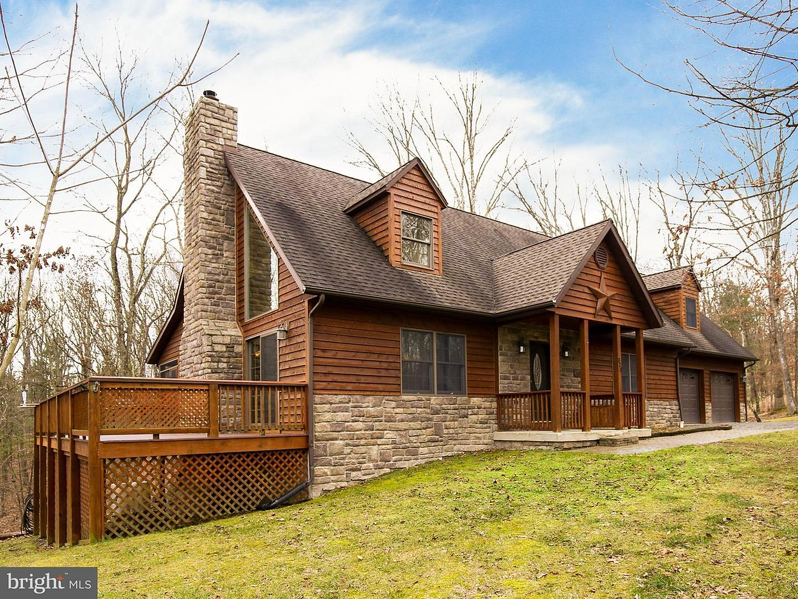
Verified prior-listing photo · Bright MLS watermark retained
The house, honestly shown
Built in 2008, 323 Colonial is log-sided over a stone-skirted foundation, with red oak floors and trim throughout. The two-story great room rises to a glass gable; a wood stove sits in the fieldstone chimney that runs from grade to ridge.
Two bedrooms, two full baths and a half bath sit above a walk-out basement. A loft overlooks the great room. The unfinished basement has a drawn and priced two-bedroom finish plan that conveys with the house as planning and pricing information.
- Built
- 2008
- Bedrooms
- 2
- Baths
- 2 full · 1 half
- Lower level
- Walk-out basement
Rooms shaped by oak, glass and stone
Real prior-listing photography shows current condition. Bright MLS watermarks remain; new public-listing photography is required after sale-prep work completes.
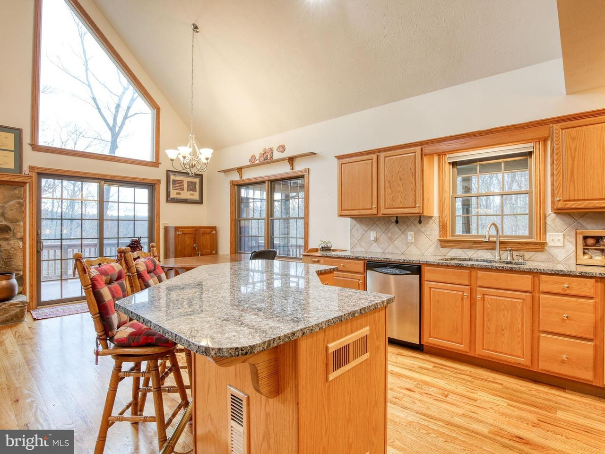
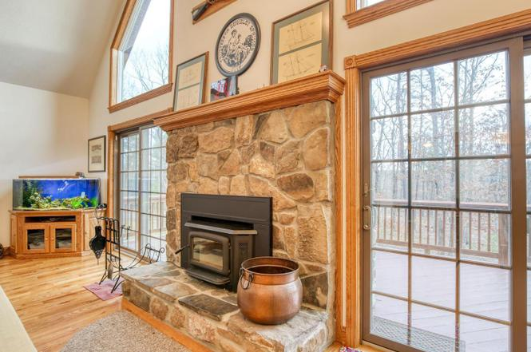
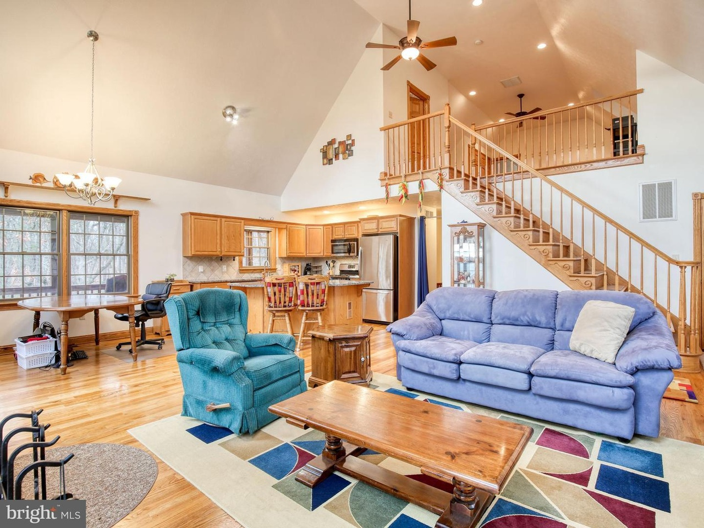
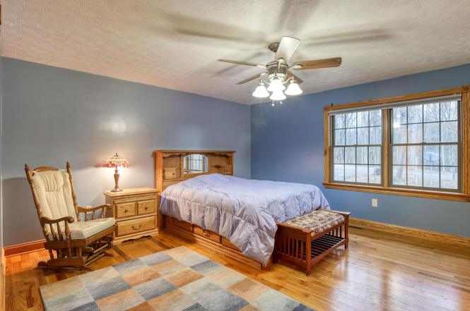
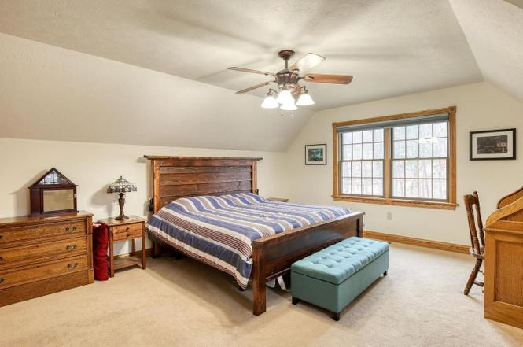
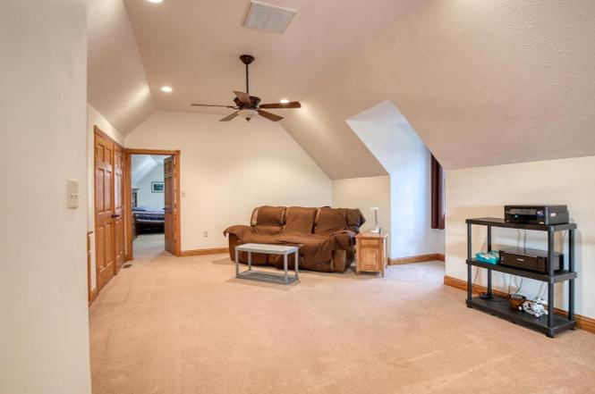
Four seasons above the springs
A wrap deck, 45-foot screened porch and wooded ridge extend the house outdoors. The HotSpring Flair at the far end of the deck conveys.
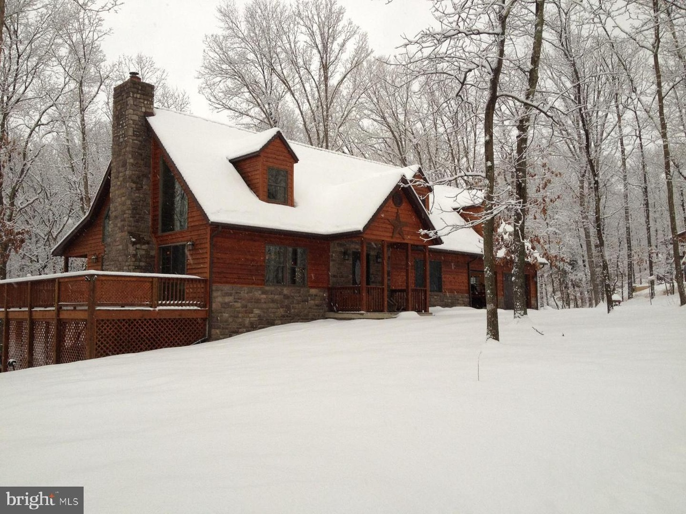
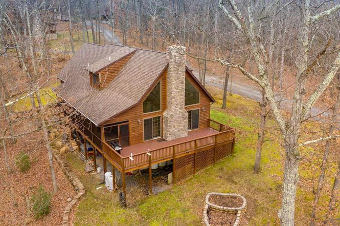
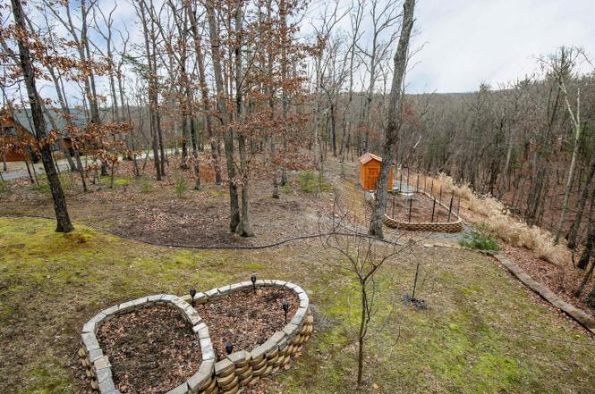
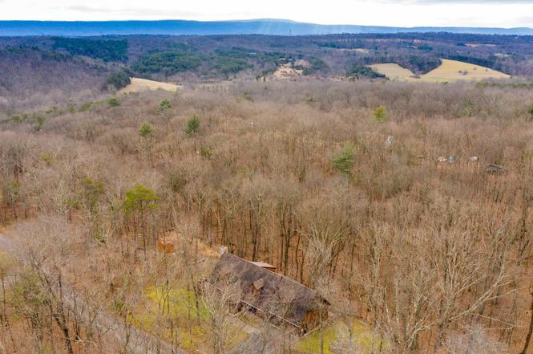
Planned work, shown separately
These AI-edited images visualise intended sale-prep work over prior-listing photographs. They are not current-condition photographs and do not promise completed work. Older visualisations are approximate; approved colours are listed in the colour record.
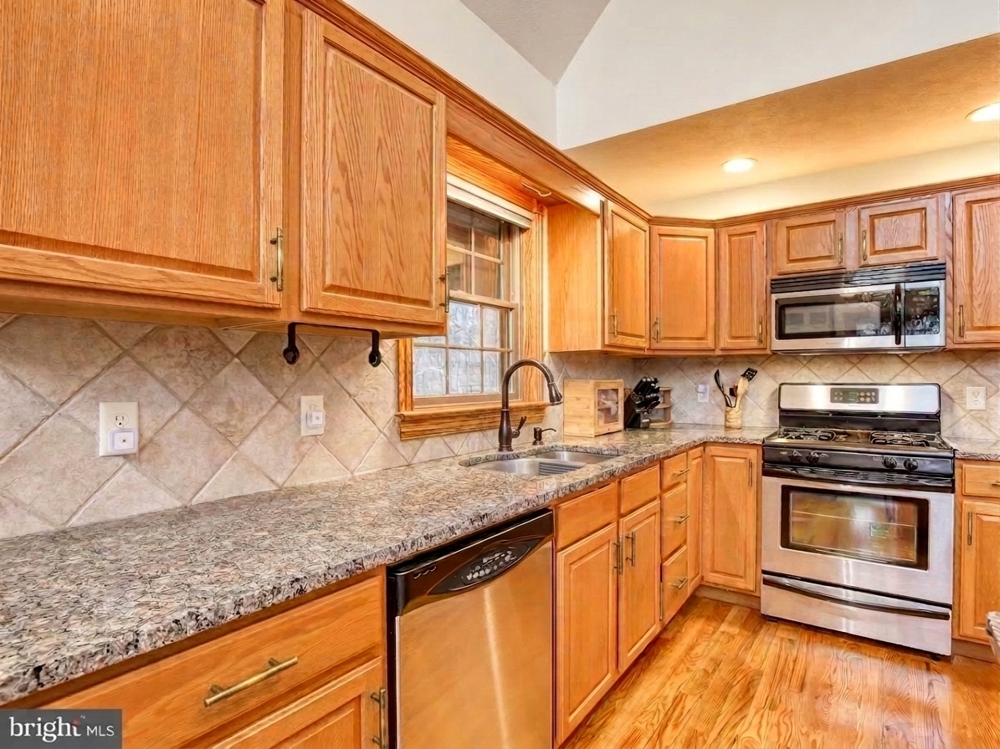
Planned-work visualisation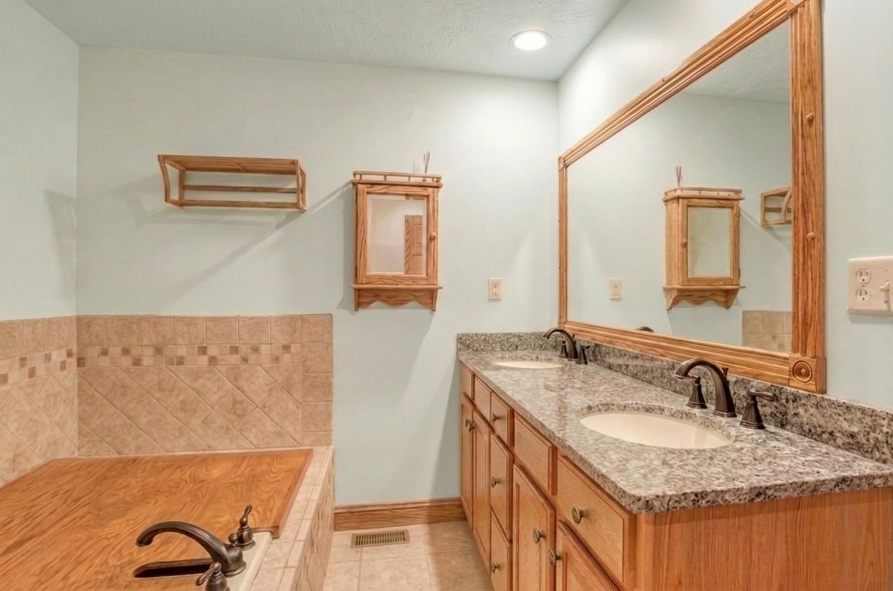
Planned-work visualisation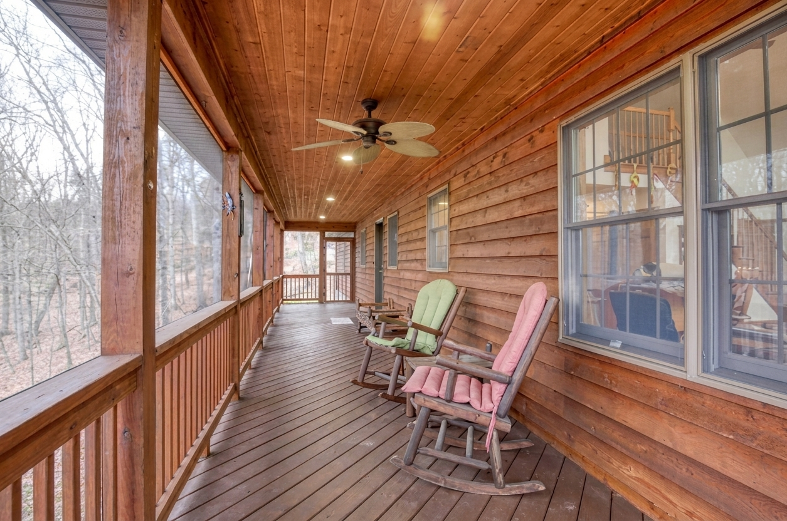
Planned-work visualisation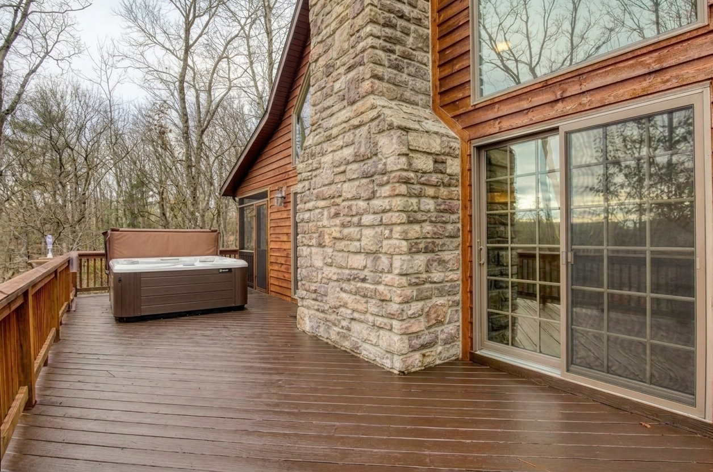
Planned-work visualisationRoom to grow
The unfinished walk-out basement has a complete CAD set for two more bedrooms, a jack-and-jill bath, den and flex room. Existing conditions, proposed plan, schedules and fourteen trade sheets—and their pricing history—convey with the house.
Drawings are reference and pricing information only, not construction or permit documents.
Review floor plansSee 323 Colonial in person
Request property information or arrange a showing through the realtor contact.
realtor@stevenhay.com